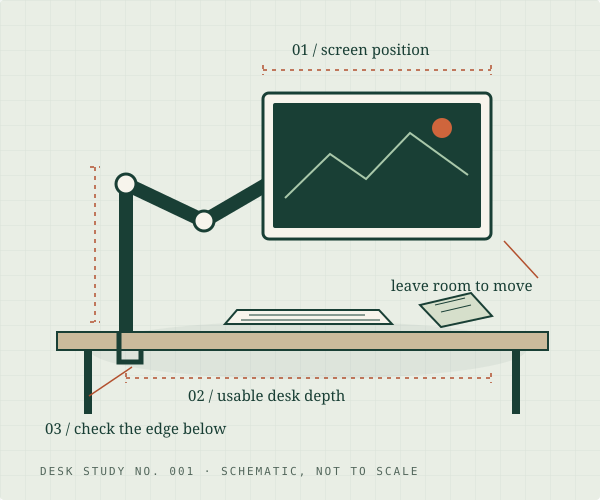

A good arm starts
with a good fit.
Weight without the stand. The mounting pattern. The edge underneath your desktop. Work through the details that a screen-size headline leaves out.
The practical buying guide →A monitor arm can clear your desk. The right one starts with the desk you actually have. Practical guides, documented specs, and a few useful measurements.

Two starting points. One helps you read your desk; the other helps you read the specifications.
Weight without the stand. The mounting pattern. The edge underneath your desktop. Work through the details that a screen-size headline leaves out.
The practical buying guide →A pole-based arm and an adjustable-lift arm solve different problems. Compare the exact single-monitor models, their limits, and the tradeoffs.
Read the documented comparison →New original guides for the parts of a monitor-arm decision that a product headline cannot answer: eye level, VESA holes, desk contact, screen size, movement and installation.
Check three published limits for the VIVO STAND-V001 and Ergotron LX 45-241-224. This is a manufacturer-spec preliminary check, not a final safety certification. Your desktop material, screen depth, hardware and clearances still need review.
Nothing you enter is sent or saved by this tool. Specs checked Oct 27, 2026. An in-range result cannot establish desk strength or safe installation. LX clamp position gaps and the VIVO source’s unspecified minimum thickness require extra care. See sources and qualifications.
The LX has a 7 lb minimum. A display below a lift mechanism’s specified range is not a better fit just because it is lighter. Check both ends.
An apron, bevel or support rail can leave a clamp with nowhere flat to sit. A thickness measurement alone will miss that obstruction.
Plan where the display and elbow will move, including near a wall. Reach is useful only when it puts the screen where you need it.